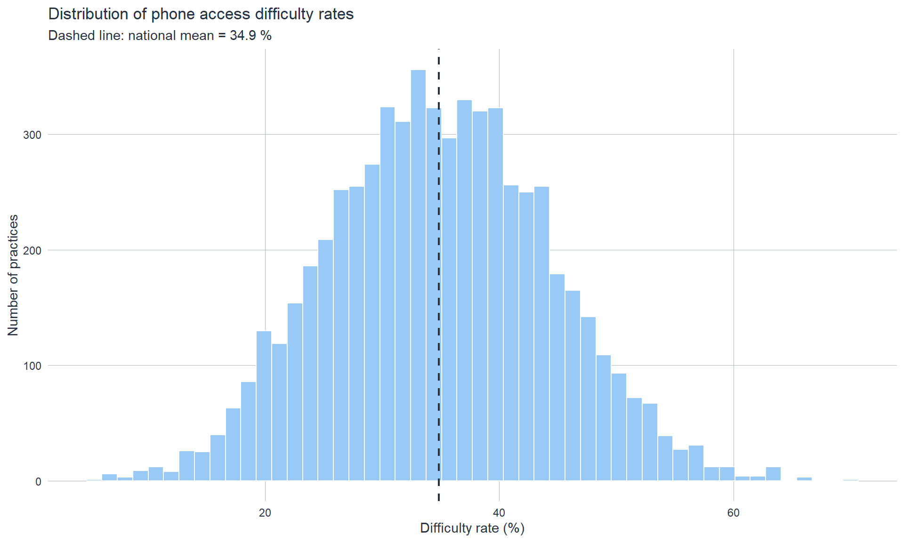
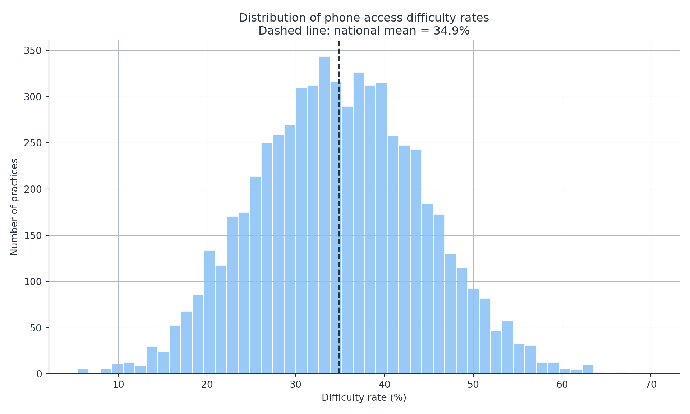
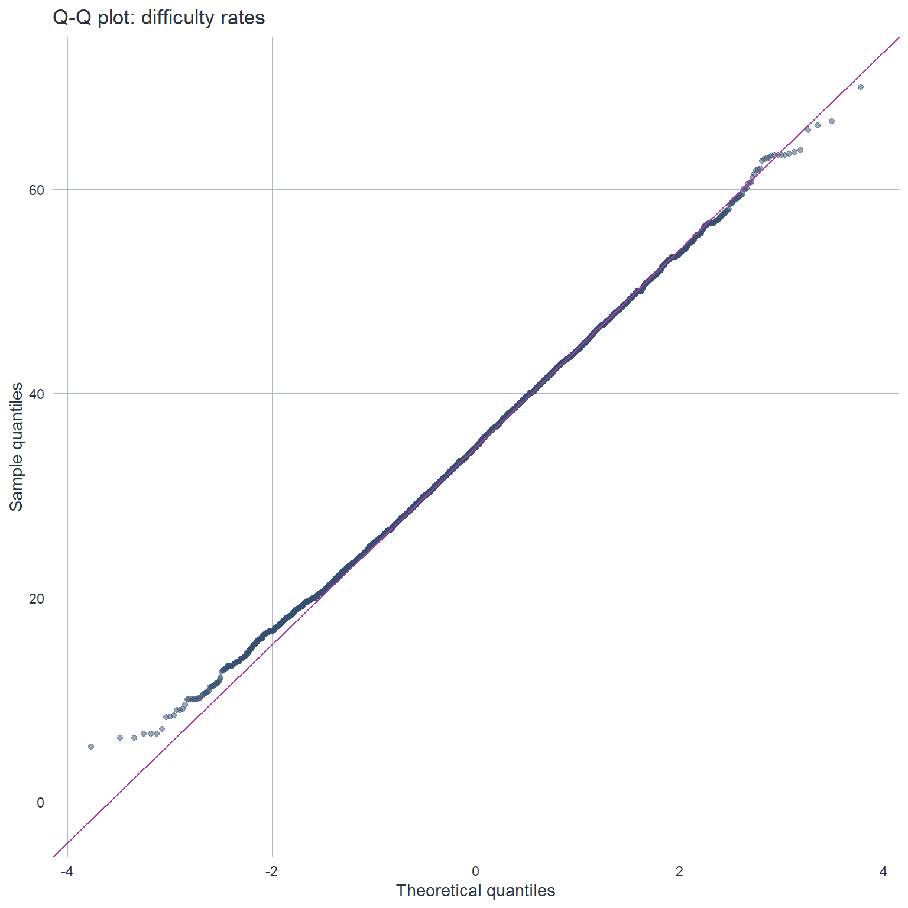
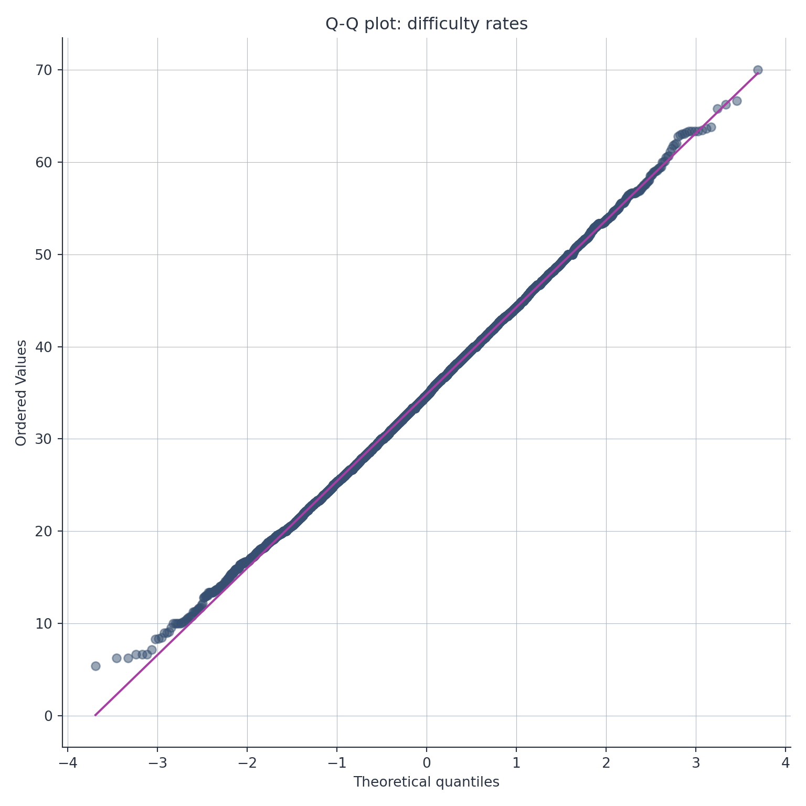
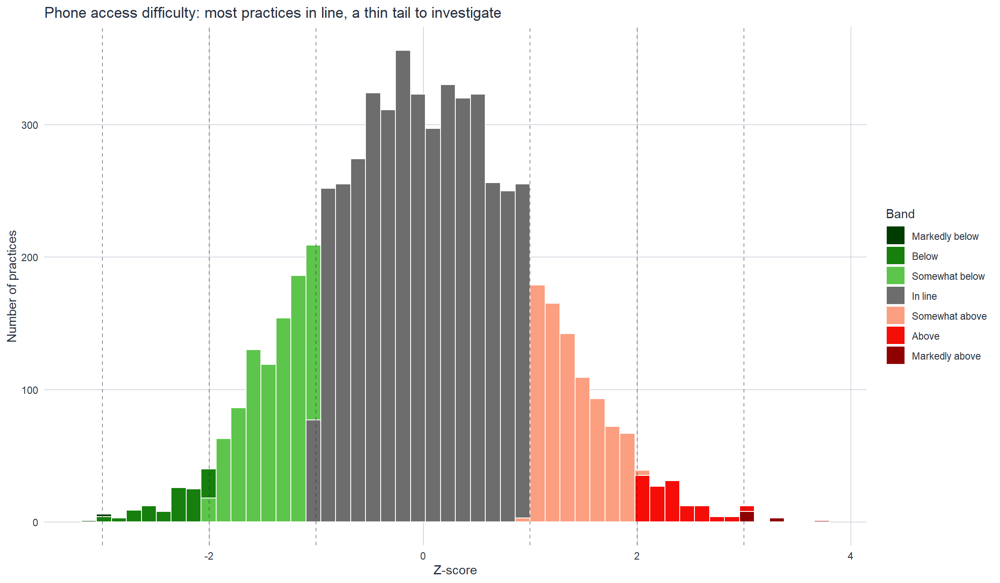
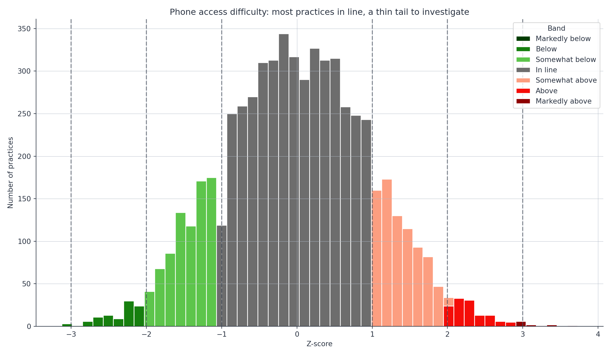

# Load required packages and the CQC figure style
library(ggplot2)
source("../R/theme_cqc.R")
# Set options
options(scipen = 999) # Avoid scientific notation19 Example 1: GP Access Analysis
Z-scoring with Data Quality Challenges
19.1 Scenario Overview
Method: z-scoring Complexity: Medium Time to complete: 2-3 hours QASQA questions: Q3 (Analysis); Q5 (Fitness for Purpose)
19.2 Scenario
You are a CQC analyst tasked with identifying GP practices with significantly poor patient access based on the 2025 GP Patient Survey. The analysis will inform inspection targeting and help identify practices that may need support.
Analytical Question: Which GP practices have phone access difficulty rates that are statistically significantly worse than the national average?
Context: The 2025 GP Patient Survey found that 35% of respondents who tried to contact their GP by phone described it as difficult. However, there is substantial variation between practices. CQC wants to identify practices in the worst-performing band for follow-up.
19.3 Learning Objectives
By working through this example, you will learn to:
- Handle survey data with varying response rates and sample sizes
- Manage missing data and document your decisions
- Check z-scoring assumptions and handle violations
- Deal with small denominators (practices with few respondents)
- Calculate and interpret z-scores in a regulatory context
- Assign performance bands and identify outliers
- Visualise results effectively for stakeholders
- Document QA decisions to meet CQC framework requirements
- Communicate findings to non-technical audiences
19.4 Dataset Description
Synthetic Data: data/gp_access_data.csv
6,500 GP practices with the following variables:
| Variable | Description | Type | Notes |
|---|---|---|---|
practice_code |
Unique practice identifier | String | Format: ABC1234 |
practice_name |
Practice name | String | Synthetic names |
icb_code |
Integrated Care Board code | String | E.g., QOQ |
icb_name |
ICB name | String | E.g., NHS Devon ICB |
region |
NHS England region | String | 7 regions |
list_size |
Registered patients | Integer | 500 - 25,000 |
survey_responses |
Survey respondents | Integer | 30 - 800 |
phone_difficult_n |
Respondents finding phone contact difficult | Integer | 0 - 500 |
imd_quintile |
Index of Multiple Deprivation quintile | Integer | 1 (most deprived) - 5 (least deprived) |
rural_urban |
Rural/urban classification | String | Urban / Rural |
Data Characteristics
Realistic issues included: - ~5% missing data on phone_difficult_n (non-response) - Wide variation in survey_responses (30 to 800) - Some practices with very small list sizes (<1,000 patients) - Slight positive skew in difficulty rates - Regional variation - Deprivation gradient (more deprived areas have worse access)
Data generation: Synthetic data generated using R (set.seed(42) for reproducibility). The data matches realistic GP Patient Survey patterns including deprivation gradients and natural variation. Both R and Python load the same CSV file, ensuring identical results.
19.5 Step 1: Data Preparation
Purpose: Load, check, clean, and prepare the GP access dataset for analysis.
Key tasks: 1. Import data 2. Check data structure and quality 3. Identify and handle missing data 4. Check for errors and outliers 5. Create analysis dataset
Import Data
import sys
import pandas as pd
import numpy as np
import matplotlib.pyplot as plt
# CQC figure style
sys.path.insert(0, "../python")
from cqc_style import apply_cqc_style, CQC_INK, CQC_BANDS
apply_cqc_style()
# Set display options
pd.set_option('display.max_columns', None)
pd.set_option('display.width', None)# Import GP access data
gp_data_raw <- read.csv("data/gp_access_data.csv", stringsAsFactors = FALSE)
# Display first few rows
head(gp_data_raw) practice_code practice_name icb_code icb_name region list_size
1 QGF2657 Practice 1 Q83 NHS Devon ICB London 2386
2 EQQ8196 Practice 2 Q31 NHS Somerset ICB North West 6730
3 AIW2734 Practice 3 Q69 NHS Cornwall ICB South West 500
4 YDX8785 Practice 4 Q20 NHS Cornwall ICB London 5890
5 JZI1576 Practice 5 Q90 NHS Devon ICB East 8943
6 DPK8204 Practice 6 Q29 NHS Cornwall ICB London 10392
survey_responses imd_quintile rural_urban phone_difficult_n
1 267 2 Rural 100
2 65 5 Rural 18
3 244 3 Urban 91
4 208 3 Urban 59
5 154 1 Urban 77
6 217 2 Urban NA# Display structure
str(gp_data_raw)'data.frame': 6500 obs. of 10 variables:
$ practice_code : chr "QGF2657" "EQQ8196" "AIW2734" "YDX8785" ...
$ practice_name : chr "Practice 1" "Practice 2" "Practice 3" "Practice 4" ...
$ icb_code : chr "Q83" "Q31" "Q69" "Q20" ...
$ icb_name : chr "NHS Devon ICB" "NHS Somerset ICB" "NHS Cornwall ICB" "NHS Cornwall ICB" ...
$ region : chr "London" "North West" "South West" "London" ...
$ list_size : int 2386 6730 500 5890 8943 10392 10521 746 5723 6908 ...
$ survey_responses : int 267 65 244 208 154 217 301 75 146 211 ...
$ imd_quintile : int 2 5 3 3 1 2 3 4 3 1 ...
$ rural_urban : chr "Rural" "Rural" "Urban" "Urban" ...
$ phone_difficult_n: int 100 18 91 59 77 NA 107 27 73 54 ...import pandas as pd
# Import GP access data
gp_data_raw = pd.read_csv("data/gp_access_data.csv")
# Display first few rows
print(gp_data_raw.head()) practice_code practice_name icb_code icb_name region \
0 QGF2657 Practice 1 Q83 NHS Devon ICB London
1 EQQ8196 Practice 2 Q31 NHS Somerset ICB North West
2 AIW2734 Practice 3 Q69 NHS Cornwall ICB South West
3 YDX8785 Practice 4 Q20 NHS Cornwall ICB London
4 JZI1576 Practice 5 Q90 NHS Devon ICB East
list_size survey_responses imd_quintile rural_urban phone_difficult_n
0 2386 267 2 Rural 100.0
1 6730 65 5 Rural 18.0
2 500 244 3 Urban 91.0
3 5890 208 3 Urban 59.0
4 8943 154 1 Urban 77.0 # Display info
print(gp_data_raw.info())<class 'pandas.core.frame.DataFrame'>
RangeIndex: 6500 entries, 0 to 6499
Data columns (total 10 columns):
# Column Non-Null Count Dtype
--- ------ -------------- -----
0 practice_code 6500 non-null object
1 practice_name 6500 non-null object
2 icb_code 6500 non-null object
3 icb_name 6500 non-null object
4 region 6500 non-null object
5 list_size 6500 non-null int64
6 survey_responses 6500 non-null int64
7 imd_quintile 6500 non-null int64
8 rural_urban 6500 non-null object
9 phone_difficult_n 6175 non-null float64
dtypes: float64(1), int64(3), object(6)
memory usage: 507.9+ KB
NoneInitial observations: - Dataset has 6,500 practices - 10 variables (identifiers, geography, characteristics, survey data) - Mix of character and numeric variables
Data Quality Checks
Check for Duplicates
# Check for duplicate practice codes
n_duplicates <- sum(duplicated(gp_data_raw$practice_code))
cat("Duplicate practice codes:", n_duplicates, "\n")Duplicate practice codes: 0 # Check for duplicate rows
n_dup_rows <- sum(duplicated(gp_data_raw))
cat("Duplicate rows:", n_dup_rows, "\n")Duplicate rows: 0 # Check for duplicate practice codes
n_duplicates = gp_data_raw['practice_code'].duplicated().sum()
print(f"Duplicate practice codes: {n_duplicates}")Duplicate practice codes: 0# Check for duplicate rows
n_dup_rows = gp_data_raw.duplicated().sum()
print(f"Duplicate rows: {n_dup_rows}")Duplicate rows: 0Result: no duplicates found.
Check Missing Data
# Count missing values by variable
missing_counts <- colSums(is.na(gp_data_raw))
missing_pct <- round(100 * missing_counts / nrow(gp_data_raw), 1)
# Create summary table
missing_summary <- data.frame(
Variable = names(missing_counts),
Missing_N = missing_counts,
Missing_Pct = missing_pct
)
# Display only variables with missing data
missing_summary[missing_summary$Missing_N > 0, ] Variable Missing_N Missing_Pct
phone_difficult_n phone_difficult_n 325 5# Count missing values
missing_summary = pd.DataFrame({
'Variable': gp_data_raw.columns,
'Missing_N': gp_data_raw.isnull().sum(),
'Missing_Pct': round(100 * gp_data_raw.isnull().sum() / len(gp_data_raw), 1)
})
# Display only variables with missing data
print(missing_summary[missing_summary['Missing_N'] > 0]) Variable Missing_N Missing_Pct
phone_difficult_n phone_difficult_n 325 5.0Findings: - phone_difficult_n has ~325 missing values (~5%) - All other variables are complete
Decision needed: How to handle missing phone_difficult_n?
Handle Missing Data
Decision: Exclude practices with missing phone_difficult_n from z-scoring analysis.
Rationale: - Cannot calculate difficulty rate without numerator - Missing appears random (not systematic) - 5% exclusion is acceptable - Document impact in QA log
# Create analysis dataset excluding missing
gp_data_clean <- gp_data_raw[!is.na(gp_data_raw$phone_difficult_n), ]
cat("Original dataset:", nrow(gp_data_raw), "practices\n")Original dataset: 6500 practicescat("Clean dataset:", nrow(gp_data_clean), "practices\n")Clean dataset: 6175 practicescat("Excluded:", nrow(gp_data_raw) - nrow(gp_data_clean), "practices\n")Excluded: 325 practices# Create analysis dataset excluding missing
gp_data_clean = gp_data_raw.dropna(subset=['phone_difficult_n'])
print(f"Original dataset: {len(gp_data_raw)} practices")Original dataset: 6500 practicesprint(f"Clean dataset: {len(gp_data_clean)} practices")Clean dataset: 6175 practicesprint(f"Excluded: {len(gp_data_raw) - len(gp_data_clean)} practices")Excluded: 325 practicesCalculate Difficulty Rate
# Calculate difficulty rate (percentage)
gp_data_clean$difficulty_rate <- 100 * gp_data_clean$phone_difficult_n / gp_data_clean$survey_responses
# Summary statistics
summary(gp_data_clean$difficulty_rate) Min. 1st Qu. Median Mean 3rd Qu. Max.
5.405 28.244 34.722 34.856 41.304 70.000 # Calculate difficulty rate (percentage)
gp_data_clean['difficulty_rate'] = 100 * gp_data_clean['phone_difficult_n'] / gp_data_clean['survey_responses']<string>:2: SettingWithCopyWarning:
A value is trying to be set on a copy of a slice from a DataFrame.
Try using .loc[row_indexer,col_indexer] = value instead
See the caveats in the documentation: https://pandas.pydata.org/pandas-docs/stable/user_guide/indexing.html#returning-a-view-versus-a-copy# Summary statistics
print(gp_data_clean['difficulty_rate'].describe())count 6175.000000
mean 34.855535
std 9.427004
min 5.405405
25% 28.244275
50% 34.722222
75% 41.304348
max 70.000000
Name: difficulty_rate, dtype: float64Save Clean Data
# In a real analysis, save the cleaned dataset alongside the raw one, e.g.:
# write.csv(gp_data_clean, "outputs/gp_access_clean.csv", row.names = FALSE)
cat("Clean data prepared:", nrow(gp_data_clean), "practices\n")Clean data prepared: 6175 practices# In a real analysis, save the cleaned dataset alongside the raw one, e.g.:
# gp_data_clean.to_csv("outputs/gp_access_clean.csv", index=False)
print(f"Clean data prepared: {len(gp_data_clean)} practices")Clean data prepared: 6175 practices19.6 Step 2: Exploratory Analysis
Purpose: Explore the distribution of difficulty rates, check z-scoring assumptions, and identify patterns.
Distribution of Difficulty Rates
ggplot(gp_data_clean, aes(x = difficulty_rate)) +
geom_histogram(bins = 50, fill = "#99C9F7", color = "white") +
geom_vline(xintercept = mean(gp_data_clean$difficulty_rate),
color = cqc_ink, linetype = "dashed", linewidth = 0.8) +
labs(
title = "Distribution of phone access difficulty rates",
subtitle = paste("Dashed line: national mean =",
round(mean(gp_data_clean$difficulty_rate), 1), "%"),
x = "Difficulty rate (%)",
y = "Number of practices"
) +
theme_cqc()
plt.figure(figsize=(10, 6))
plt.hist(gp_data_clean['difficulty_rate'], bins=50, color='#99C9F7', edgecolor='white')
plt.axvline(gp_data_clean['difficulty_rate'].mean(), color=CQC_INK, linestyle='--', linewidth=1.5)
plt.xlabel('Difficulty rate (%)')
plt.ylabel('Number of practices')
plt.title(f"Distribution of phone access difficulty rates\nDashed line: national mean = {gp_data_clean['difficulty_rate'].mean():.1f}%")
plt.tight_layout()
plt.show()
Observations: - Approximately normal distribution - Mean around 34.9% - Slight positive skew - Range from ~5% to ~70%
Check Normality
ggplot(gp_data_clean, aes(sample = difficulty_rate)) +
stat_qq(colour = "#375071", alpha = 0.5) +
stat_qq_line(color = "#A83DA4") +
labs(
title = "Q-Q plot: difficulty rates",
x = "Theoretical quantiles",
y = "Sample quantiles"
) +
theme_cqc()
# Shapiro-Wilk test (on sample if n > 5000)
if (nrow(gp_data_clean) > 5000) {
sample_data <- sample(gp_data_clean$difficulty_rate, 5000)
shapiro_result <- shapiro.test(sample_data)
} else {
shapiro_result <- shapiro.test(gp_data_clean$difficulty_rate)
}
cat("Shapiro-Wilk test p-value:", format.pval(shapiro_result$p.value), "\n")Shapiro-Wilk test p-value: 0.0032705 
from scipy import stats
fig, ax = plt.subplots(figsize=(8, 8))
stats.probplot(gp_data_clean['difficulty_rate'], dist="norm", plot=ax)((array([-3.68973416, -3.45765086, -3.32989911, ..., 3.32989911,
3.45765086, 3.68973416], shape=(6175,)), array([ 5.40540541, 6.25 , 6.25 , ..., 66.25766871,
66.66666667, 70. ], shape=(6175,))), (np.float64(9.428095457547485), np.float64(34.855534525728345), np.float64(0.9996445474662845)))ax.get_lines()[0].set_color('#375071')
ax.get_lines()[0].set_alpha(0.5)
ax.get_lines()[1].set_color('#A83DA4')
ax.set_title("Q-Q plot: difficulty rates")
plt.tight_layout()
plt.show()
# Shapiro-Wilk test (on sample if n > 5000)
if len(gp_data_clean) > 5000:
sample_data = gp_data_clean['difficulty_rate'].sample(5000)
stat, p_value = stats.shapiro(sample_data)
else:
stat, p_value = stats.shapiro(gp_data_clean['difficulty_rate'])
print(f"Shapiro-Wilk test p-value: {p_value:.4f}")Shapiro-Wilk test p-value: 0.0021Assessment: Distribution is approximately normal - suitable for z-scoring.
19.7 Step 3: Z-scoring Analysis
Purpose: Calculate z-scores, assign performance bands, and identify practices for follow-up.
Calculate Z-scores
# National statistics
national_mean <- mean(gp_data_clean$difficulty_rate)
national_sd <- sd(gp_data_clean$difficulty_rate)
cat("National mean:", round(national_mean, 2), "%\n")National mean: 34.86 %cat("National standard deviation:", round(national_sd, 2), "%\n")National standard deviation: 9.43 %# Calculate z-scores
gp_data_clean$z_score <- (gp_data_clean$difficulty_rate - national_mean) / national_sd
# Summary
summary(gp_data_clean$z_score) Min. 1st Qu. Median Mean 3rd Qu. Max.
-3.12402 -0.70131 -0.01414 0.00000 0.68408 3.72806 # National statistics
national_mean = gp_data_clean['difficulty_rate'].mean()
national_sd = gp_data_clean['difficulty_rate'].std()
print(f"National mean: {national_mean:.2f}%")National mean: 34.86%print(f"National standard deviation: {national_sd:.2f}%")National standard deviation: 9.43%# Calculate z-scores
gp_data_clean['z_score'] = (gp_data_clean['difficulty_rate'] - national_mean) / national_sd<string>:3: SettingWithCopyWarning:
A value is trying to be set on a copy of a slice from a DataFrame.
Try using .loc[row_indexer,col_indexer] = value instead
See the caveats in the documentation: https://pandas.pydata.org/pandas-docs/stable/user_guide/indexing.html#returning-a-view-versus-a-copy# Summary
print(gp_data_clean['z_score'].describe())count 6.175000e+03
mean 6.673924e-17
std 1.000000e+00
min -3.124018e+00
25% -7.013108e-01
50% -1.414153e-02
75% 6.840788e-01
max 3.728063e+00
Name: z_score, dtype: float64Assign Performance Bands
# Assign CQC's descriptive bands (high difficulty = worse access,
# so "above" bands are the concerning ones for this indicator)
gp_data_clean$band <- cut(gp_data_clean$z_score,
breaks = c(-Inf, -3, -2, -1, 1, 2, 3, Inf),
labels = c("Markedly below", "Below", "Somewhat below",
"In line", "Somewhat above", "Above",
"Markedly above"))
# Count by band
table(gp_data_clean$band)
Markedly below Below Somewhat below In line Somewhat above
3 109 888 4200 834
Above Markedly above
129 12 import numpy as np
# Assign CQC's descriptive bands (high difficulty = worse access,
# so "above" bands are the concerning ones for this indicator)
gp_data_clean['band'] = pd.cut(gp_data_clean['z_score'],
bins=[-np.inf, -3, -2, -1, 1, 2, 3, np.inf],
labels=["Markedly below", "Below", "Somewhat below",
"In line", "Somewhat above", "Above",
"Markedly above"])<string>:4: SettingWithCopyWarning:
A value is trying to be set on a copy of a slice from a DataFrame.
Try using .loc[row_indexer,col_indexer] = value instead
See the caveats in the documentation: https://pandas.pydata.org/pandas-docs/stable/user_guide/indexing.html#returning-a-view-versus-a-copy# Count by band
print(gp_data_clean['band'].value_counts().sort_index())band
Markedly below 3
Below 109
Somewhat below 888
In line 4200
Somewhat above 834
Above 129
Markedly above 12
Name: count, dtype: int64Identify Practices for Follow-up
# Flag practices in the concerning bands (z >= 2: Above / Markedly above)
flagged_practices <- gp_data_clean[gp_data_clean$band %in% c("Above", "Markedly above"), ]
cat("Practices flagged for follow-up:", nrow(flagged_practices), "\n")Practices flagged for follow-up: 141 cat("Percentage of total:", round(100 * nrow(flagged_practices) / nrow(gp_data_clean), 1), "%\n")Percentage of total: 2.3 %# Show top 10
head(flagged_practices[order(-flagged_practices$z_score),
c("practice_code", "practice_name", "difficulty_rate", "z_score", "band")], 10) practice_code practice_name difficulty_rate z_score band
1298 WEZ2767 Practice 1298 70.00000 3.728063 Markedly above
3192 ZXC2022 Practice 3192 66.66667 3.374469 Markedly above
5623 OLH1827 Practice 5623 66.25767 3.331083 Markedly above
985 BTV4349 Practice 985 65.78947 3.281418 Markedly above
1790 QXW8282 Practice 1790 63.82979 3.073538 Markedly above
4103 UFT2111 Practice 4103 63.63636 3.053020 Markedly above
484 MCA7978 Practice 484 63.44086 3.032281 Markedly above
1078 JHL5258 Practice 1078 63.33333 3.020875 Markedly above
4213 LZL3090 Practice 4213 63.33333 3.020875 Markedly above
4590 TWE2108 Practice 4590 63.33333 3.020875 Markedly above# Flag practices in the concerning bands (z >= 2: Above / Markedly above)
flagged_practices = gp_data_clean[gp_data_clean['band'].isin(["Above", "Markedly above"])]
print(f"Practices flagged for follow-up: {len(flagged_practices)}")Practices flagged for follow-up: 141print(f"Percentage of total: {100 * len(flagged_practices) / len(gp_data_clean):.1f}%")Percentage of total: 2.3%# Show top 10
print(flagged_practices.nlargest(10, 'z_score')[['practice_code', 'practice_name', 'difficulty_rate', 'z_score', 'band']]) practice_code practice_name difficulty_rate z_score band
1297 WEZ2767 Practice 1298 70.000000 3.728063 Markedly above
3191 ZXC2022 Practice 3192 66.666667 3.374469 Markedly above
5622 OLH1827 Practice 5623 66.257669 3.331083 Markedly above
984 BTV4349 Practice 985 65.789474 3.281418 Markedly above
1789 QXW8282 Practice 1790 63.829787 3.073538 Markedly above
4102 UFT2111 Practice 4103 63.636364 3.053020 Markedly above
483 MCA7978 Practice 484 63.440860 3.032281 Markedly above
1077 JHL5258 Practice 1078 63.333333 3.020875 Markedly above
4212 LZL3090 Practice 4213 63.333333 3.020875 Markedly above
4589 TWE2108 Practice 4590 63.333333 3.020875 Markedly aboveVisualise Results
# CQC bands palette: green = fewer access problems, red = more (labels carry
# the meaning as well as colour)
band_cols <- c("Markedly below" = "#003C00", "Below" = "#167F0E",
"Somewhat below" = "#5DC54B", "In line" = "#6D6D6D",
"Somewhat above" = "#FC9E80", "Above" = "#F50D08",
"Markedly above" = "#8F0000")
ggplot(gp_data_clean, aes(x = z_score, fill = band)) +
geom_histogram(bins = 50, color = "white") +
scale_fill_manual(values = band_cols) +
geom_vline(xintercept = c(-3, -2, -1, 1, 2, 3), linetype = "dashed",
colour = cqc_ink, alpha = 0.5) +
labs(
title = "Phone access difficulty: most practices in line, a thin tail to investigate",
x = "Z-score",
y = "Number of practices",
fill = "Band"
) +
theme_cqc() +
theme(legend.position = "right")
# CQC bands palette: green = fewer access problems, red = more (labels carry
# the meaning as well as colour)
band_order = ["Markedly below", "Below", "Somewhat below", "In line",
"Somewhat above", "Above", "Markedly above"]
colors = dict(zip(band_order, CQC_BANDS))
plt.figure(figsize=(12, 7))
bins = np.linspace(gp_data_clean['z_score'].min(), gp_data_clean['z_score'].max(), 51)
for band in band_order:
data = gp_data_clean[gp_data_clean['band'] == band]['z_score']
plt.hist(data, bins=bins, label=band, color=colors[band], edgecolor='white')
for x in [-3, -2, -1, 1, 2, 3]:
plt.axvline(x, linestyle='--', alpha=0.5, color=CQC_INK)
plt.xlabel('Z-score')
plt.ylabel('Number of practices')
plt.title('Phone access difficulty: most practices in line, a thin tail to investigate')
plt.legend(title='Band')
plt.tight_layout()
plt.show()
Save Results
# In a real analysis, save the results and the flagged list for QA, e.g.:
# write.csv(gp_data_clean, "outputs/gp_access_results_full.csv", row.names = FALSE)
# write.csv(flagged_practices, "outputs/flagged_practices.csv", row.names = FALSE)
cat("Analysis complete - flagged practices:", nrow(flagged_practices), "\n")Analysis complete - flagged practices: 141 # In a real analysis, save the results and the flagged list for QA, e.g.:
# gp_data_clean.to_csv("outputs/gp_access_results_full.csv", index=False)
# flagged_practices.to_csv("outputs/flagged_practices.csv", index=False)
print(f"Analysis complete - flagged practices: {len(flagged_practices)}")Analysis complete - flagged practices: 14119.8 Step 4: Stakeholder Report
Executive Summary
Analysis: GP Phone Access Difficulty - 2025 Survey
Date: June 12, 2026
Analyst: CQC Data & Insight Team
Key Findings
- National average: 34.9% of survey respondents find phone contact difficult
- Practices analysed: 6,175 (after excluding 325 with missing data)
- Practices flagged (Above / Markedly above): 141 practices (2.3%)
- Strongest signals (Markedly above, z > 3): 12 practices (0.2%)
Recommendations
- Immediate follow-up: Markedly above practices (z > 3)
- Monitoring: Above practices (2 < z ≤ 3)
- Context review: Consider practice size, deprivation, rurality
Summary
This example demonstrates a complete z-scoring workflow for CQC regulatory analytics: data quality checks and missing-data handling, exploratory analysis and assumption checking, z-score calculation and performance banding, identification of practices for follow-up, and stakeholder-ready visualisation and reporting. The QA record below closes the loop.
19.9 QA Documentation Record
| Item | Detail |
|---|---|
| Method | Z-scoring (standard) |
| QASQA question | Q3: Analysis – was the method appropriate and correctly applied?; Q5: Fitness for Purpose – does the indicator measure what the regulatory question requires? |
| Competencies | A: Statistical analysis and methods; C: Data quality and governance; E: Quality assurance and reproducibility |
| Data source | GP Patient Survey 2025 (synthetic illustrative data – seed 42 for reproducibility) |
| Key decisions | Complete case analysis for missing data (5% excluded, documented); z ≥ 2 threshold for flagging; national mean and standard deviation calculated from all providers with complete data |
| Assumptions | Data approximately normally distributed; providers are comparable (same indicator definition); survey non-response is not systematically related to phone access quality |
| Limitations | Ecological analysis – practice-level rates, not individual patient experiences; no risk adjustment for deprivation or rurality; survey non-response may introduce bias |
| Sensitivity | Results checked at z ≥ 1.5 and z ≥ 2.5 thresholds – flagged set changes but top-flagged practices are stable |
| Next steps | Cross-check flagged practices against inspection history and other indicators; confirm data quality for extreme outliers before regulatory action |
| Sign-off | ________ (Analyst) ________ (Peer reviewer) ________ (Date) |